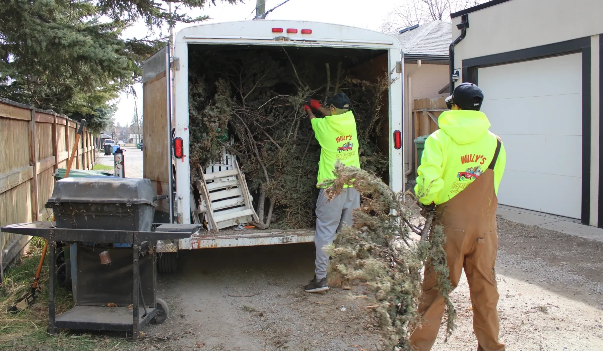
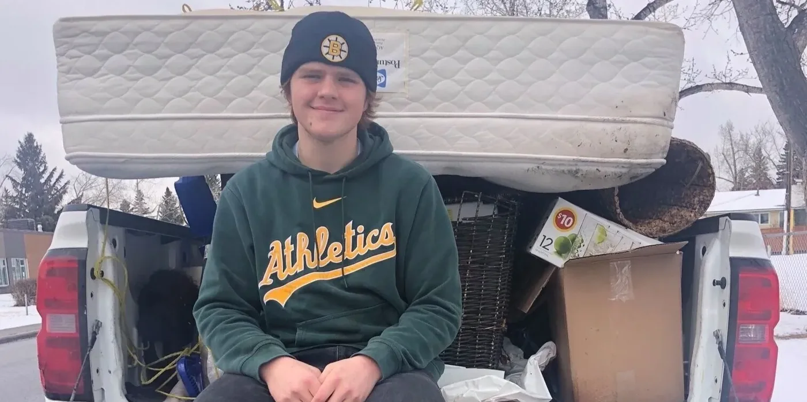
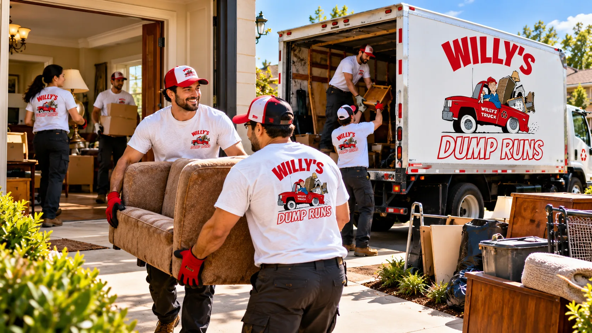
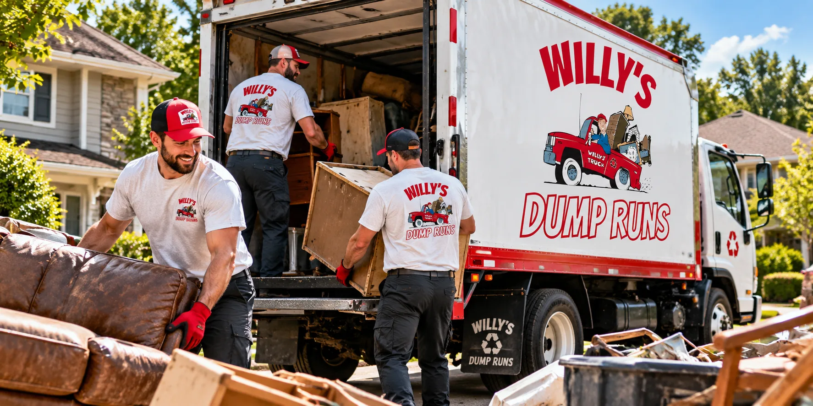

Electronic recycling
TVs, VCRs, stereos, computers, appliances and similar items, taken away and recycled responsibly.
Willy's Dump Runs is Calgary's trusted, locally and family-owned junk removal crew. Send us a photo or two and we will get you a free quote.
Call or text 403-397-2142 · Serving Calgary since 2018

Locally and family owned since 2018. Here is what customers say on Facebook, Google and Nextdoor.
Priced by the size of the load. No hidden fees, and you pay only after the job is complete.
Minimum pickup. Small load: one large item or a few smaller ones, like a mattress, washer, dryer or dishwasher.
Roughly half of a 1/2 ton pickup truck bed. Can be combined with another load.
A full 1/2 ton pickup truck of furniture, appliances, bagged garbage, recycling and similar items. Anything that fills the back of a normal pickup.
Fits the equivalent of 7.5 half-ton truck loads. Great for renovation debris, monthly condo or apartment pickups and estate cleanouts.
Pricing reflects the volume of junk and the time and effort required. No hidden fees, and you pay only after the job is done.
Loads are priced by how much of a 1/2 ton pickup they fill. Examples assume curbside, driveway or alley pickup, and haul-out services are available on request.
You pay only once the job is complete. Custom financing plans are available.
City of Calgary dumping fees may apply, along with surcharges for paint, tires, chemical and Freon recycling. Pricing may vary by location and exact load size.
Trucks and trailers run from 6:30 a.m., Monday to Friday, with Saturdays on request. Please have items outside by 7 a.m. Cancellations need 72 hours' notice, or a $100 fee may apply.
Three easy steps from clutter to clear.
Text, message us on Facebook, email or use the form with a photo or two of your items and your Calgary community. We price it by load size.
Our crew arrives and loads everything. We recycle and dispose of it responsibly.
You pay only after the job is complete. No hidden fees.
Real jobs from Calgary alleys, garages and driveways.



Eco-friendly, affordable junk removal for homes, offices and businesses across Calgary.
TVs, VCRs, stereos, computers, appliances and similar items, taken away and recycled responsibly.
Piles in the basement, garage or under the stairs: couches, chairs, mattresses, BBQs and more.
Hauling for side projects, renovations and construction work, from a pickup load to a full trailer.
Paint cans, propane tanks, oil, bear spray and Freon-containing items, recycled the proper way.
Professional senior move-out services to help seniors transition smoothly, including junk removal for seniors. Call or text to book your appointment today.
Download the PDFJunk removal for offices, retail spaces and construction sites, plus monthly condo and apartment pickups and estate cleanouts.
Ask for a quoteTell us your community and what needs to go, or call or text to book. For the fastest quote, text or email a photo or two of your items.